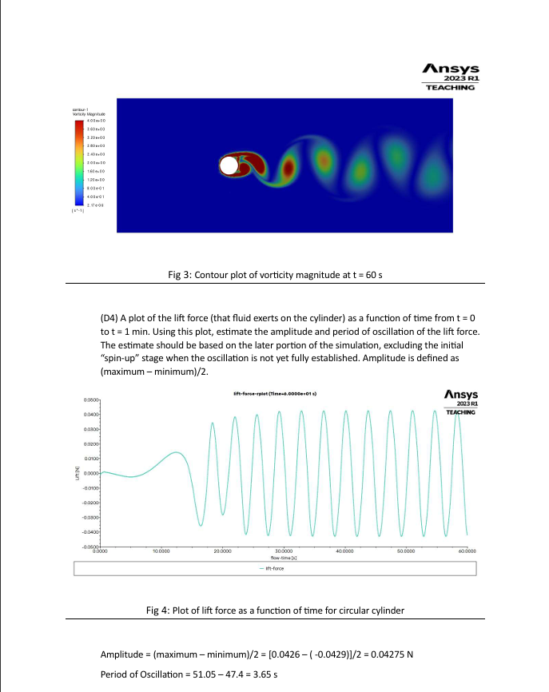
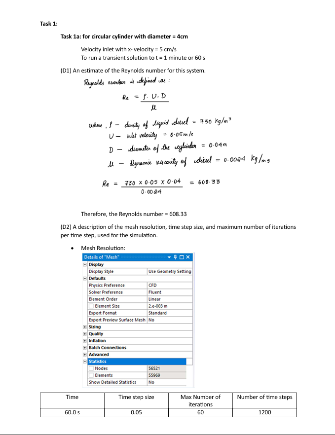
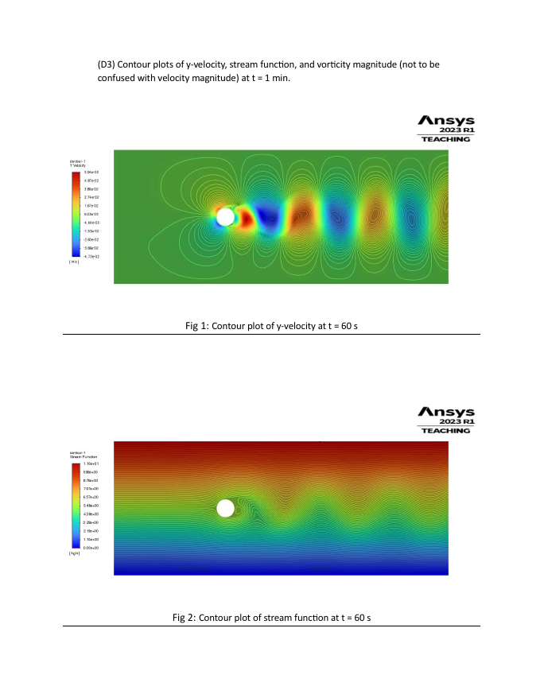
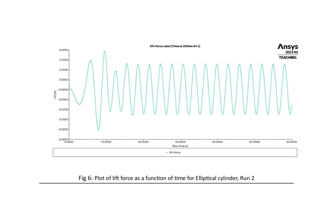

Flow Over Cylinder — Vortex Shedding (2D)

Objective: simulate unsteady wake and quantify lift oscillation for a 0.04 m cylinder at inlet U = 0.05 m/s.
Mesh: ~55k elements; Δt = 0.05 s; max 60 iterations/step; total 60 s.
Outcome: shedding captured with St≈0.22; estimated lift amplitude ≈ 0.042 N; period ≈ 3.65 s.

Y-velocity contours at t = 60 s with streamlines (vortex street visible).

Stream function contours at t = 60 s.
Vorticity magnitude, t = 60 s — used as cover.

Lift coefficient vs time; amplitude and period estimated from steady oscillation region.

Lift force vs time for elliptical variants (context comparison).